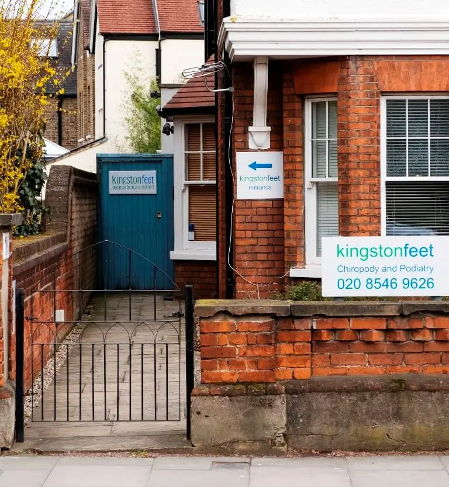

Find Us

Easy to find!
North Kingston on Richmond Road between Latchmere Road and St Albans Road.
The zebra crossing is a good landmark just before the clinic.
kingstonfeet
196 Richmond Road
Kingston upon Thames
KT2 5HE
By Foot
The Richmond Road is the main road running from Kingston town centre through Ham to Richmond. At average walking speeds you can get from the Rotunda (near Kingston Railway Station) to kingstonfeet in about 10 minutes. Please allow extra time if you need to walk at a slower pace.
By Bus
kingstonfeet is easy to access using a 65 bus which runs all the way from Kingston to Ealing.
From Kingston leave the bus at the Latchmere Road stop, opposite the Shell petrol station.
You will need to cross Richmond Road at the zebra crossing to enter the clinic - please take care when doing this.
Coming from Richmond, the 65 stops at the Latchmere Road stop, a few steps towards Kingston and you are outside the clinic gate.
By Car
kingstonfeet is very easy to access by car. However, please be considerate to our neighbours when parking. There is plenty of space available in the surrounding roads, particularly Bank Lane, Albany Park Road and St. Alban's Road, where a small fee is charged between 11am and 2pm. The ticket machine is located half way along Albany Park Road or you can pay using the RingGo phone app with the five digit area code 26572.
By Train
Kingston Railway Station is the nearest stop and is only 10 minutes walk from kingstonfeet. Exit the station and turn left under the railway bridge. This will take you on to Richmond Road. Keep walking past Sainsbury's and we are a further 7 minutes on the right hand side.
Use the gate and pathway on the
left hand side for kingstonfeet

In the evening you will be guided to the
entrance by blue LED lighting in the wall